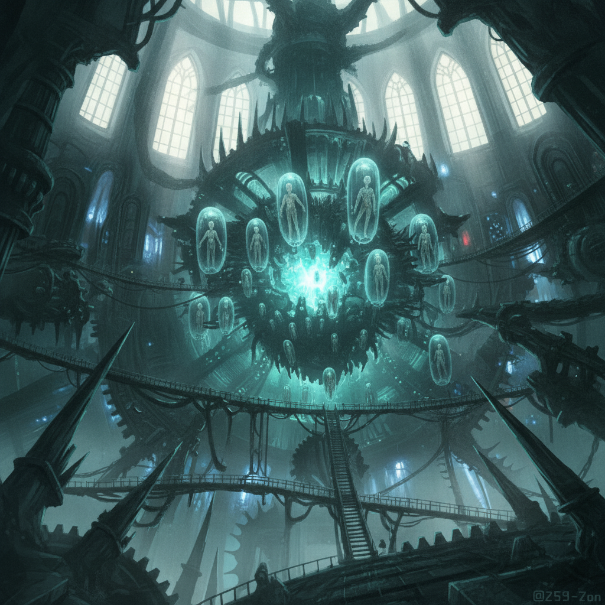

The Inner Sanctum. A cavernous engine-cathedral, blinding aether-core glare, and deep shadows dancing on catwalks. This is the final assault.
Ember unleashes a torrent of Vash-strong current, raw and unmetered, a living storm. The Rust on her arm glows, then spreads, but she pushes through the pain, fueled by defiance.
The battle is a maelstrom of weaves and steel. The enemy boss, a figure cloaked in shadow and twisted aether, falls beneath the combined might of our coalition.
The monstrous machinery grinds to a halt. The sickly green glow fades. Silence.
Ember is alive. We won.